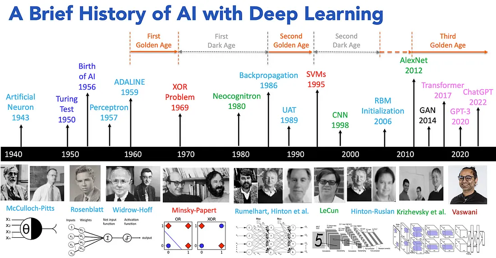
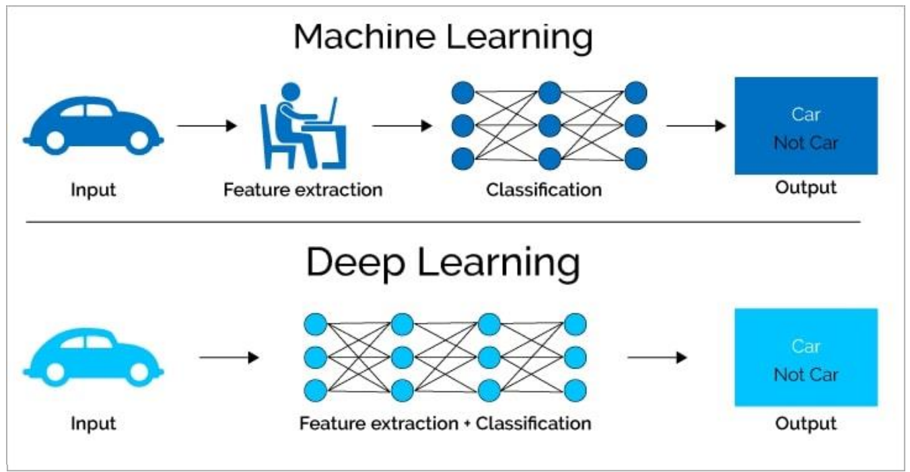
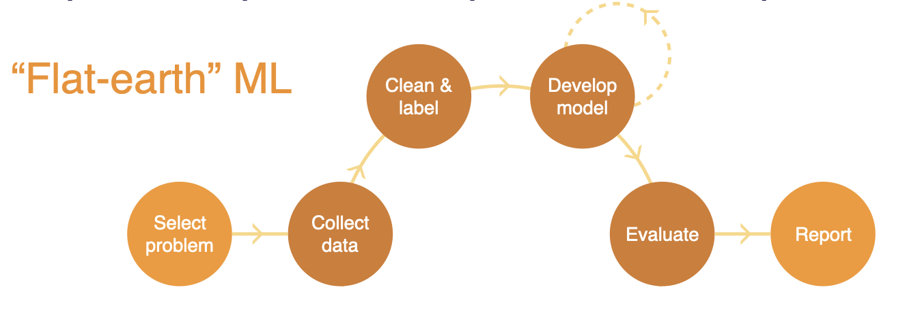
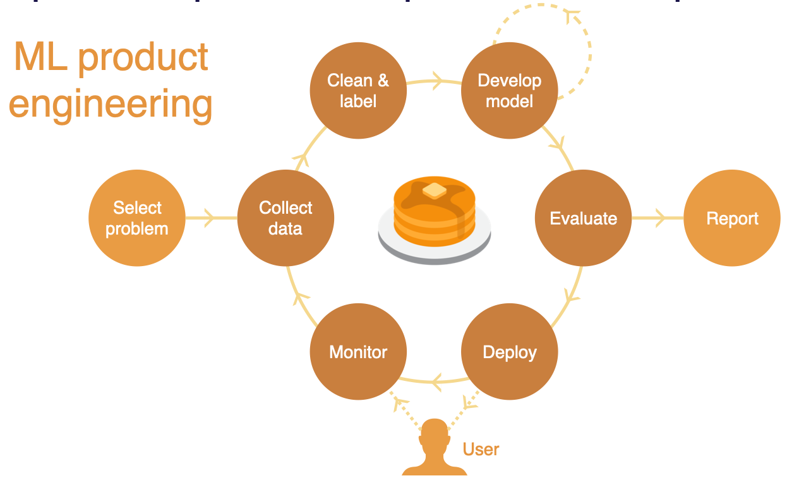
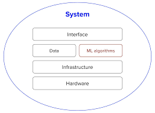
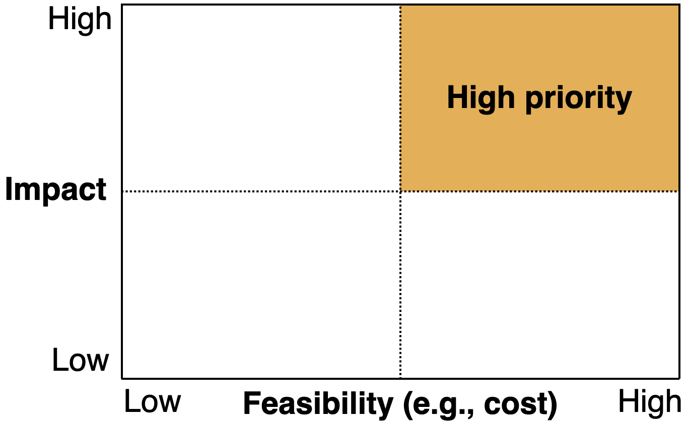
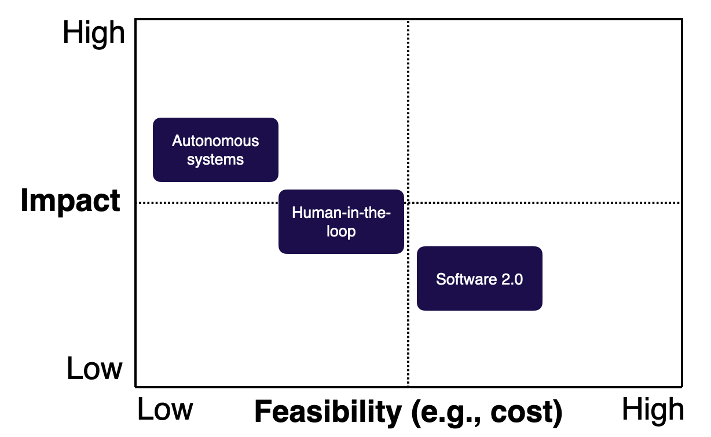
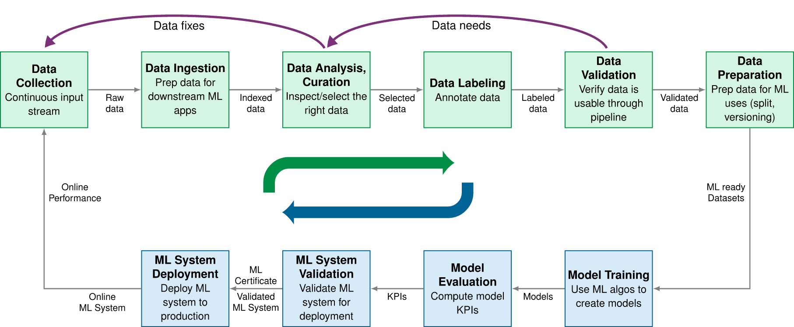
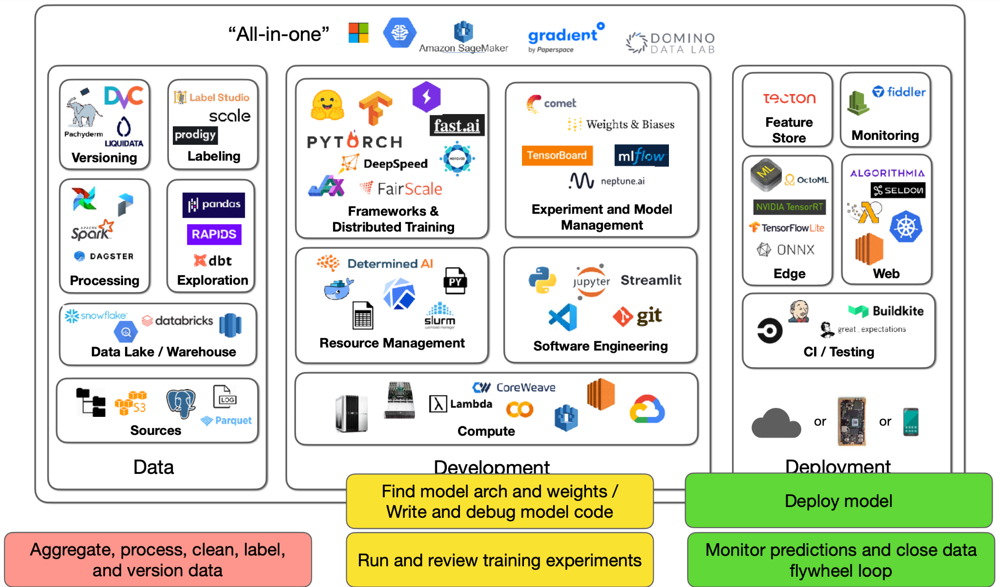
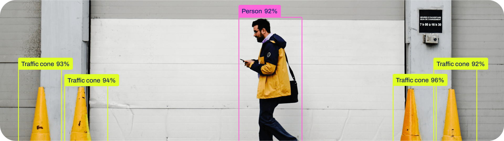

Curso Práctico de Deep Learning en 3 Semanas
Introducción a la Materia
¿Qué es Deep Learning? (En pocas palabras)
- Una forma avanzada de inteligencia artificial que aprende a partir de grandes volúmenes de datos.
- Permite a las computadoras aprender de datos con modelos inspirados en el cerebro.
- Clave para entender patrones complejos en información no estructurada (imágenes, sonido, texto).
- Se basa en el paradigma de programación diferenciable (differentiable programming).
¿Cómo se conecta con otras áreas? y su evolución
- Inteligencia Artificial ⟶ Aprendizaje Automático ⟶ Deep Learning

¿En qué se diferencia de Machine Learning?

¿Por qué Deep Learning HOY? Su Importancia.
- Impulsa la innovación en múltiples industrias (salud, finanzas, automoción, entretenimiento…).
- Permite automatización y análisis de datos a gran escala.
- Base de productos y servicios que usamos a diario (reconocimiento facial, asistentes de voz, recomendaciones personalizadas).
- ¡Transforma datos en soluciones!
¿Qué está pasando hoy con DL?
- Modelos con miles de millones de parámetros.
- Entrenamiento en miles de GPUs.
- Costos de entrenamiento millonarios (pero también acceso gratuito gracias al open source).
- Resultados sorprendentes: DALL·E, GPT, Stable Diffusion.
- ¡No siempre necesitas ser masivo! DL también funciona en casos comunes.
Avances Recientes Impresionantes
- Modelos generativos (texto, imagen, música): ChatGPT, DALL·E, Midjourney.
- Vehículos autónomos (Tesla, Waymo).
- Diagnóstico médico asistido por IA (detección de cáncer, retinopatía).
- Traducción y reconocimiento de voz en tiempo real.
- Agentes de IA
Estructuración de Proyectos de Deep Learning
¿De qué trata esta lección?
Mensaje central: un buen proyecto de Deep Learning no es solo un modelo entrenado. Es un sistema listo para producción que conecta datos, algoritmos, infraestructura, evaluación, usuarios, monitoreo y valor de negocio.
Objetivo: entender cuándo conviene usar DL, cómo elegir proyectos de alto impacto y costo viable, y cómo estructurar el ciclo de vida completo de un proyecto.
¿Por qué existe esta lección?
- Los productos con IA ya son parte del mainstream, y entrenar un modelo es cada vez más accesible (modelos preentrenados, AutoML, APIs, frameworks estandarizados).
- Lo difícil ya no es solo entrenar un modelo: es traducir avances de investigación en productos reales.
- Muchos proyectos de ML/DL fracasan antes de empezar: son técnicamente inviables, están mal definidos, nunca llegan a producción, no tienen criterios de éxito compartidos, o resuelven un problema que no vale la complejidad que introducen.
Pensar en modelo vs Pensar en producto


Fuente: Tobin, Le & Rachakonda, FSDL Lecture 1, pp. 2-5, 9-10.
El valor de un proyecto de ML debe superar no solo su costo de desarrollo, sino también la complejidad adicional que agrega al sistema de software.
Componentes de un sistema de ML en producción

Diferentes componentes de un sistema de ML (Huyen, Designing Machine Learning Systems, Fig. 1-1, p. 7)
- Un algoritmo de machine learning es solo una pequeña parte de un sistema de ML en producción.
- Un sistema en producción también incluye la interfaz de usuario/desarrollador, el stack de datos, el hardware, y la infraestructura de desarrollo, despliegue, monitoreo y actualización.
- Enfocarse solo en el algoritmo no alcanza para un sistema en producción.
¿Cuándo usar (y cuándo NO usar) ML/DL?
ML/DL suele brillar cuando:
- la tarea es repetitiva
- el costo de una predicción equivocada es bajo o manejable
- el problema ocurre a gran escala
- los patrones cambian con el tiempo y las reglas fijas quedan obsoletas.
Evitar ML/DL cuando:
- el caso de uso no es ético
- soluciones más simples ya resuelven el problema lo suficientemente bien
- la solución no es costo-efectiva.
Si el ML no puede resolver todo el problema, puede resolver una parte más pequeña de él.
Selección de proyectos: impacto, viabilidad y bajo costo


Fuente: Tobin, Le & Rachakonda, FSDL Lecture 1, pp. 10-13.
- Alto impacto: predicciones baratas que generan valor o reducen fricción.
- Alta viabilidad / bajo costo: datos disponibles, errores tolerables y precisión alcanzable.
- Software 2.0: reemplazar reglas manuales por comportamientos aprendidos.
El ciclo de vida de un proyecto de DL
Un sistema de ML en producción se desarrolla mediante un ciclo con idas y vueltas entre etapas:

Desarrollo de ML de doble pipeline (Reddi, Introduction to Machine Learning Systems, Fig. 3.1, p. 86)
Evaluación y mantenimiento en producción
Evaluación más allá del accuracy:
- KPIs del modelo y qué tan listo está para desplegarse.
- Latencia de inferencia, huella de memoria, costo de servir el modelo.
- Comportamiento en umbrales específicos, no solo métricas agregadas.
- Robustez ante distribuciones de datos cambiantes.
Mantenimiento — el despliegue no es el final:
- El desempeño puede decaer y los requisitos pueden cambiar.
- Los datos en producción pueden alejarse de los de entrenamiento.
- El reentrenamiento y la validación son problemas recurrentes de ingeniería y presupuesto.
Costo total de propiedad (TCO) de un sistema de ML
Un sistema de ML tiene un costo de ciclo de vida completo, no solo un costo de entrenamiento.

El “iceberg” del TCO: el costo de entrenamiento es solo la punta visible (Reddi, Machine Learning Systems at Scale, Fig. 12.10, p. 716)
Un error común es tratar la factura inicial de entrenamiento como el principal riesgo financiero; la deuda de datos y el mantenimiento pueden hacer que un modelo preciso sea económicamente insostenible.
IA responsable como parte del ciclo de vida
Los principios de IA responsable deben integrarse en todo el ciclo de vida:
- equidad (fairness);
- explicabilidad;
- transparencia;
- privacidad;
- rendición de cuentas (accountability);
- robustez.
La IA responsable es un compromiso arquitectónico en todas las fases, no un paso de cumplimiento posterior.
Herramientas en proyectos de Deep Learning

Lecture 2: Development, Infrastructure & Tooling (Karayev, FSDL 2022 course)
En resúmen: Antes de empezar preguntar ¿vale la pena usar ML?
Antes de escribir código, responde:
- ¿Estamos listos? Producto, datos, almacenamiento y equipo adecuados.
- ¿Realmente necesitamos ML? Comparar contra reglas, heurísticas o estadística simple.
- ¿Es ético usar ML aquí? Evaluar riesgos, privacidad, sesgos y consecuencias.
Checklist mínimo: criterios de éxito, dataset de referencia, línea base simple y revisión rápida de literatura.
Canvas práctico del proyecto de DL
Documenta lo esencial:
- Problema: fricción del usuario/producto y valor de predecir.
- Datos: disponibilidad, etiquetado, estabilidad, seguridad y calidad.
- Sistema: tipo de producto, precisión, latencia, costo y confiabilidad.
- Ciclo de vida: despliegue, monitoreo, reentrenamiento y métricas de negocio.
- Responsabilidad: privacidad, equidad, explicabilidad, robustez y rendición de cuentas.
Pregunta guía: ¿qué debes definir antes de entrenar el primer modelo?
Caso de uso: reconocimiento de objetos con Ultralytics

Caso de uso: predictor de precio de una casa
Aplicación interactiva para transformar datos de entrada en una predicción útil.
¡Gracias!
Preguntas y discusión
Deep Learning en 3 Semanas
Jefferson Rodríguez

Deep Learning · Universidad de Montevideo · Jefferson Rodríguez